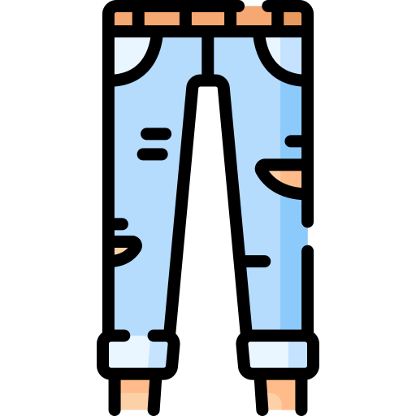
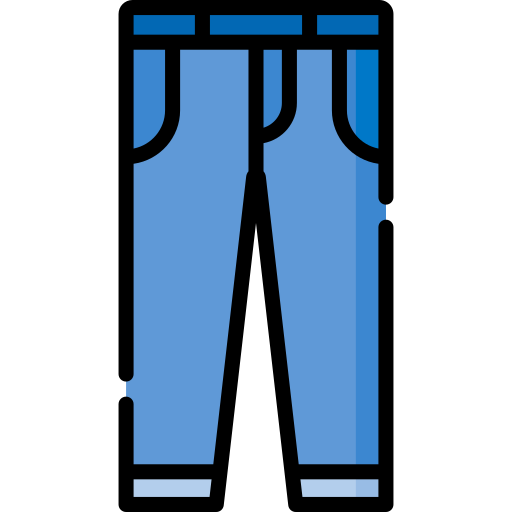
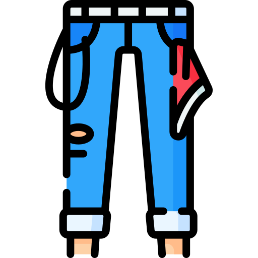
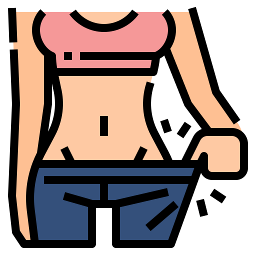
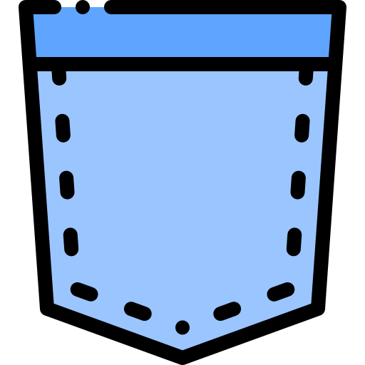
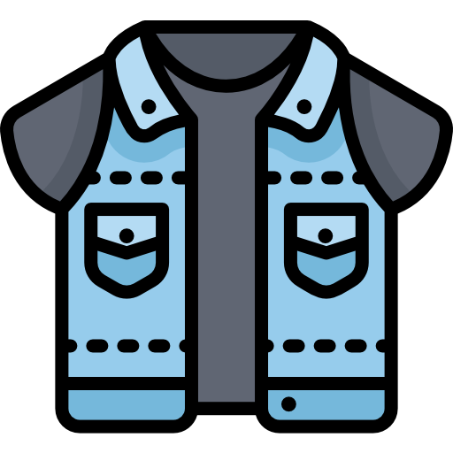
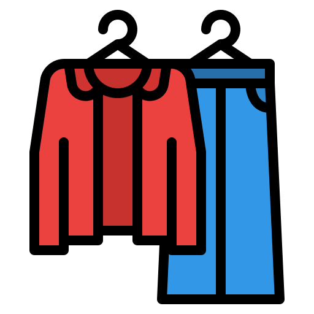
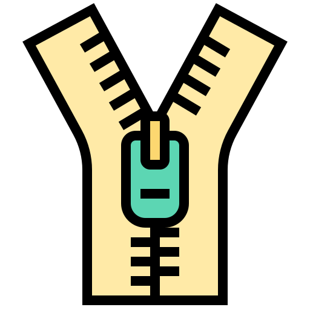
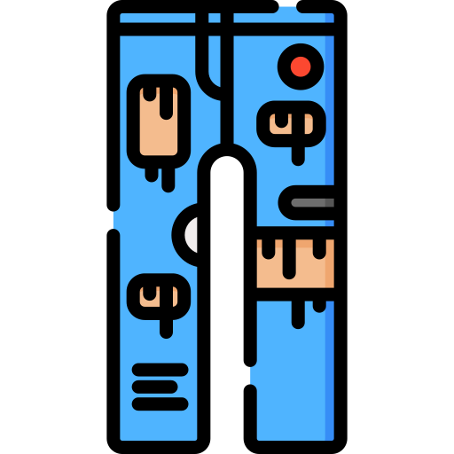
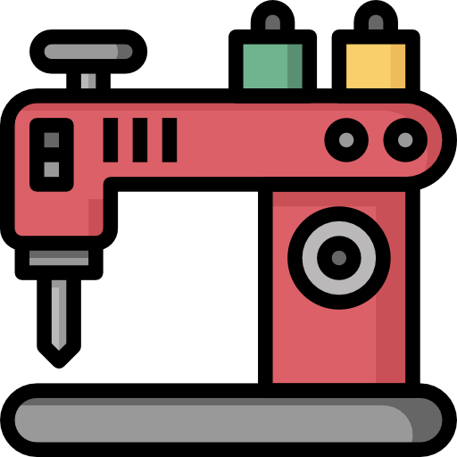

Don’t ever throw away a jean
Alter, re-design, customise. Motherland Group, with over three decades across the apparel value chain, is now into denim alteration, customised denim and denim bag retail — a denim solution provider across B2C and B2B.

Our mission
To help people wear premium denim — by customising a new jean to the right fabric, fit, size and wash, redesigning and altering old denim into new fashion, and creating a unique identity.
Our message
We make unique denim garments individually, to each customer’s fabric, fit and look. The customers who love our work are passionate about their denim. Unlike others, we offer our own production facility for handcrafting custom denim and a process house for every wash and finish.
Make it, fit it, fade it, fix it
In-house sewing, washing and finishing means a single pair gets the same equipment as a 60,000-piece order.
Denim manufacturing
Niche products like denim bags and denim accessories. Our design team works a step ahead of the competition, and in-house sewing, washing and finishing deliver quality denims at the right price. We manufacture denim trousers, shorts and other bottom wear — and we specialise in denim bags, our core product. But we can do anything that is denim.
Denim customisation
Custom-fit trousers and suits are easy to find. A custom denim service is not — because it isn’t just cut, sew and finish. It’s choosing the right denim fabric, designing the garment, understanding the shrinkage pattern, sewing on heavy-duty specialised machinery, processing for the right look and feel, then finishing it as you want. Denim is an art and a science, rightly blended.
Denim re-designing
Your seldom-worn jean can become your favourite. We restore old, worn jeans into a different pair altogether — packages that refresh the jean, take away stains, make it bright as new, add new looks, wash-downs, overdyes and more. There are exciting possibilities in your old denim.
Denim alterations
You buy a brand-new jean, aren’t happy with the store’s alteration service, find a tailor with great difficulty and still get below-par work, because they aren’t equipped for it. mDenim offers professional, technical alteration — from a length reduction with the original hem to anything else you want done — on specialised heavy-duty factory equipment, by tailors who understand denim.
Fifteen ways we can change a denim
One-stop solutions for everything you wear.
Embroidering
Embellishing denim with decorative stitching, colourful thread and a variety of stitch patterns to create unique designs.
 Washes
Washes
Treatments that alter the colour, texture and appearance of denim — stone, bleach, acid and other specialised washes.

Hems
The finished edge of a denim garment — stitched, folded or cut for a clean, even edge that resists fraying.

Length Alteration
Adjusting the length through hemming or cutting, to a better fit and a style that suits the wearer.

Tapering
Narrowing the leg opening for a more modern or fitted look, using specialised sewing techniques.

Waist Alteration
Adjusting the waistline for a better fit, through resizing, adding darts or other sewing techniques.
 Holes & Tears
Holes & Tears
Damage repaired and reinforced by darning, patching and other methods, to prolong the life of the garment.

Patch Work
Decorative and functional — patches of contrasting denim or other fabric attached to repair, reinforce and design.

Damaging
Deliberately distressed, worn or vintage looks, created by cutting, sanding or bleaching the fabric.
Darning
Repairing holes and worn areas by weaving new threads through the existing fabric.

Gathering
Ruffles made with a longer stitch length and pulled threads, adding texture and volume to the fabric.
Tailoring
Altering denim to a better fit or style — hemming, tapering, waistband adjustments and more.

Zips
Zippers for denim, usually metal, built to be durable and long-lasting while adding a functional, stylish detail.

Rips
Intentional or unintentional tears that add a distressed or vintage look, often needing repair or reinforcement.

Hardware
Buttons, rivets, zippers and other metal elements, functional and decorative, used in building a denim garment.
And washes, because we have in-house manufacturing
Give a new life to your old denim. Professional alteration with the original hem, the fit you want, and many more. Alterations are done on specialised, heavy-duty factory equipment by skilled tailors who understand the nuances of denim.
Get started now
People who are passionate about their denim
Bags, alterations and jeans that fit again.
Everyone asks me where I got it
I am thankful to mDenim for the bag I bought last month. I am so happy with it and all my colleagues ask me where I got it — because it’s a beautiful design at a reasonable price. Trust me, the bag designs are marvellous; you’ll know once it’s on your shoulder.
Now the fitting is excellent
My waist size reduced from 42″ to 36″. I had three jeans that needed re-altering to my fit. I found mDenim through a Google search, contacted Anisha, explained what I needed, went in person, and the tailor took measurements and re-altered the jeans. Now the fitting is excellent. Their service is excellent and they did amazing work.
The bag is mind blowing
mDenim team, you amazed me with the bag. I especially appreciate the person who guided me through all the fabric work that went into it. At home my sister and mum use the one-sided bag for everything. Everyone should try these bags — the design is very good, it’s unisex, the stitching is finely done, and the price is reasonable.
Still using it for my laptop
Thank you so much mDenim. You gave me really good service for my clothes washing, and the bag I bought recently is very usable for daily purposes. I am still using it for my laptop and other things and have not found a single fault in the stitching. A very unique and marvellous design.
Bring us your denim
Length, waist, taper, rips, patches, a whole new wash — or a jean built from scratch.